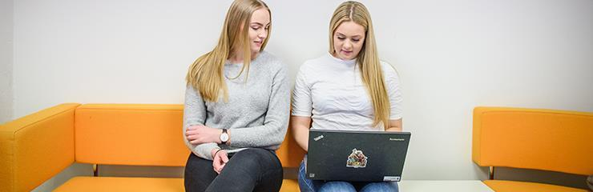

Skolen har en egen IKT-avdeling og vi hjelper deg gjerne!

Hos IKT-avdelingen får du hjelp med din pc
Foto: Marianne Wahlberg
Hva hjelper vi deg med?
Vi bidrar til at alle elever og ansatte får en mest mulig effektiv datahverdag, uten mye ventetid når datamaskiner er ute av drift
Vi har support til alle ansatte og elever, i tillegg til noe server- og nettansvar
Vi har ikke noe ansvar for elever og ansattes filer ved feil på maskinen eller ved “retanking”. Det er viktig at alle tar backup av alle sine filer, ikke bare ved innlevering av maskinen til oss, men hver uke for sikkerhets skyld.